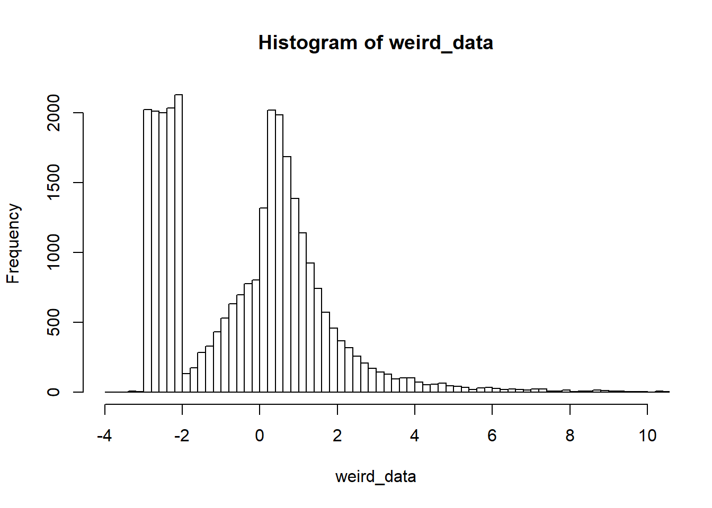
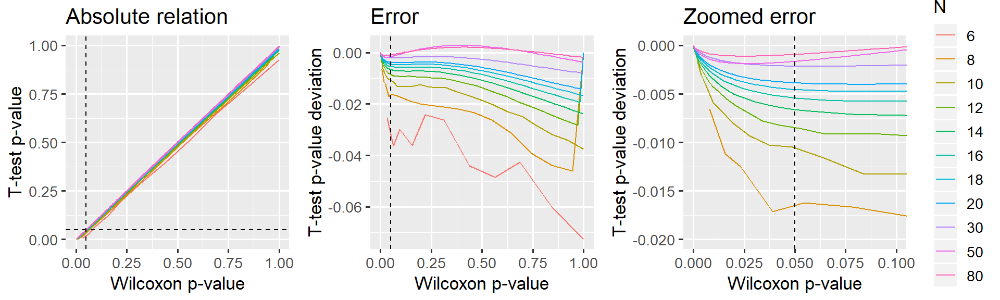

This document presents the close relationship between the p-values of the Wilcoxon signed-rank test and t-test with signed ranks as dependent variable. It is an appendix to the post “Common statistical tests as linear models”. Since Wilcoxon matched pairs is just the signed-rank on difference scores, the points below apply to that as well.
TL;DR: I argue below that for N > 14, 5the t-test is a reasonable approximation. For N > 50, it is almost exact.
First, let’s find a way tocreate some clearly non-normal data. How about this ex-gaussian + uniform values in the negative end:
weird_data = c(rnorm(10000), exp(rnorm(10000)), runif(10000, min=-3, max=-2))
hist(weird_data, breaks=200, xlim=c(-4, 10))
Now, comparing p-values is simple:
x = sample(weird_data, 50) # Pick out a few values to get reasonable p-values
signed_ranks = sign(x) * rank(abs(x))
p_wilcox = wilcox.test(x)$p.value
p_ttest = t.test(signed_ranks)$p.value
rbind(p_wilcox, p_ttest) # Print in rows## [,1]
## p_wilcox 0.03369345
## p_ttest 0.03183350OK, so they are close in this example. But was this just luck and a special case of N=50?
Let’s do what we did above, but running a few thousand simulations for different N and means (mu):
library(tidyverse)
signed_rank = function(x) sign(x) * rank(abs(x))
# Parameters
Ns = c(seq(from=6, to=20, by=2), 30, 50, 80)
mus = c(0, 1, 2) # Means
PERMUTATIONS = 1:200
# Run it
D = expand.grid(set=PERMUTATIONS, mu=mus, N=Ns) %>%
mutate(
# Generate data
data = map2(mu, N, function(mu, N) mu + sample(weird_data, N)),
# Run tests
wilcox_raw = map(data, ~ wilcox.test(.x)),
ttest_raw = map(data, ~ t.test(signed_rank(.x))),
# Tidy it up
wilcox = map(wilcox_raw, broom::tidy),
ttest = map(ttest_raw, broom::tidy)
) %>%
# Get as columns instead of lists; then remove "old" columns
unnest(wilcox, ttest, .sep='_') %>%
select(-data, -wilcox_raw, -ttest_raw)
head(D)Let’s take a look at how the p-values from the “ranked t-test” compare to Wilcoxon p-values:
D$N = factor(D$N) # Make N a factor for prettier plotting
library(ggplot2)
library(patchwork)
# A straight-up comparison of the p-values
p_relative = ggplot(D, aes(x=wilcox_p.value, y=ttest_p.value, color=N)) +
geom_line() +
geom_vline(xintercept=0.05, lty=2) +
geom_hline(yintercept=0.05, lty=2) +
labs(title='Absolute relation', x = 'Wilcoxon p-value', y = 'T-test p-value') +
#coord_cartesian(xlim=c(0, 0.10), ylim=c(0, 0.11)) +
theme_gray(13) +
guides(color=FALSE)
# Looking at the difference (error) between p-values
p_error_all = ggplot(D, aes(x=wilcox_p.value, y=ttest_p.value-wilcox_p.value, color=N)) +
geom_line() +
geom_vline(xintercept=0.05, lty=2) +
labs(title='Error', x = 'Wilcoxon p-value', y = 'T-test p-value deviation') +
theme_gray(13) +
guides(color=FALSE)
# Same, but zoomed in around p=0.05
p_error_zoom = ggplot(D, aes(x=wilcox_p.value, y=ttest_p.value-wilcox_p.value, color=N)) +
geom_line() +
geom_vline(xintercept=0.05, lty=2) +
labs(title='Zoomed error', x = 'Wilcoxon p-value', y = 'T-test p-value deviation') +
coord_cartesian(xlim=c(0, 0.10), ylim=c(-0.020, 0.000)) +
theme_gray(13)
# Show it. Patchwork is your friend!
p_relative + p_error_all + p_error_zoom
The “signed rank t-test”" underestimates p (it is too liberal), but I would say that this deviance is acceptable for N > 14, i.e. where the error is at most 0.5% in the “critical” region around p=5%. N Needs to exceed 30 before p becomes virtually identical to Wilcoxon (difference less than 0.2%).
In further testing, I found that the p-value curves are not affected by simply shifting the data away from the test value, thus lowering the means. Similarly, the overall shape is similar for various crazy and non-crazy distributions. For simplicity, I have unfolded this here.
It has also been suggested to use Z-transforms of the ranks, though I’ve found this to introduce larger differences in p-values.